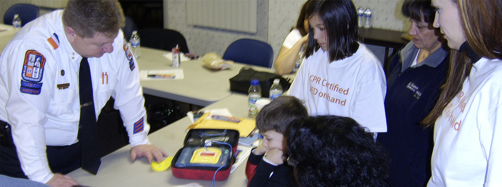

AUTOMATED EXTERNAL DEFIBRILLATOR
What Is An AED?
- AED stands for “automated external defibrillator.”
- It is a portable device, designed for anyone to use.
- The device uses SMART technology to tell if a shock is needed.
- Without an AED unit on hand, a victim of sudden cardiac arrest has less than a 5% chance of survival.
- With an AED and early defibrillation, survival can increase to 90%.
How Do I Use An AED?
- Bring an AED to the scene if anyone is reported unconscious, not breathing, and/or without a pulse.
- All AED units are easy-to-use and guide the rescuer through the “Save” process.
- Follow the instructions provided by the AED.
- Pictures show exactly where to place the electrodes on the victim’s body. Apply them.
- Turn on the AED.
- Once the device is turned on, the AED will either emit a shock or ask the rescuer to push a flashing “Shock” button. The device determines whether a shock is necessary or not; the rescuer does not have to make any health judgments in the emergency situation.
- An AED will keep analyzing and keep emitting shocks until the emergency medical professionals arrive.
AEDs are becoming more common, and like a fire extinguisher, may someday be standard equipment in every building. AEDs are designed so that anyone can become a lifesaver.
If you have additional questions about AEDs, please contact Start A Heart.